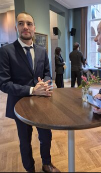

My name is N.A.M. Oosterlee, and I am currently a student of the MA programme Book and Digital Media at Leiden University. I am a lifelong learner carrying an immense passion for writing, painting, running, scientific research and playing music. My greatest interests lie in words, language development, books and history. The love for literature may not come as a surprise knowing this!
Although it is my greatest passion now, books were not always on my mind. Diagnosed with ADD (inattentive-ADHD) at 23, I previously experienced major difficulties with the art of reading. Medication allowed me for the first time to experience and comprehend the written word completely. This revelation gradually turned into an obsession in books, and it eventually led me to study English literature at Leiden University.
During my studies, Ann Radcliffe's A Sicilian Romance introduced me to the Gothic literary genre. This book ultimately inspired me to write my own fiction. Even today, and probably long after that, I keep writing Gothic-inspired tales, applying my knowledge of historical linguistics (philology) to my texts.
Why did I choose Book and Digital Media? Despite my knowledge in English literature, linguistics and philology, I still want to learn how the publishing industry works. I hope to land a job as an editor or literary agent after graduation. My goal is to help authors reach and produce works of which they are profoundly proud and satisfied of. People often ask me: 'Why do you even care about books? And why on earth did you choose to study these courses?'. My only response would be that I truly believe that a world without books is something which humanity needs to avoid at all costs. You do not come closer to humanity than by reading an imaginative story, which was born out of someone's shared worldview and experience.
Languages:
Websites of my programmes:
BA English Language and Culture (Philology)
MA Literary Studies (Philology)
MA Media Studies (Book and Digital Media)
| Test 1 | Test 2 |
| Test 3 | Test 4 |